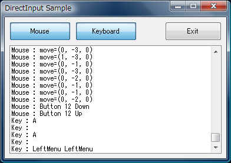

VBでマウスの動きを捉える方法(VB2005 + DirectInput編)
DirectInputを使う方法のVB2005(VB.NET)版です。
基本的な流れは一緒ですが、.Net Frameworkに合ったものになってます。
DirectInputを使うための準備
VB2005(VB.NET)からDirectInputを使う場合、
下記の.NETコンポーネットを参照追加して下さい。
Microsoft.DirectX
Microsoft.DirectX.DirectInput
メニュー「プロジェクト」－「参照の追加」で開くダイアログに
上記のコンポーネントが見付からない場合は
DirectX SDKをインストールしてみて下さい。
いつも通りサンプルプログラムを元に説明していきます。
ここで説明するプログラムのソースは、下記からダウンロードできます。
DotNetDISample.zip
このプログラムを実行すると、下記のウィンドウが開きます。

プログラムは全てForm1フォームクラス内に記述してあります。
（説明の為、エラー処理等は簡略化してあります。）
順に説明します。
|
Option Explicit On Option Strict On '参照設定にて下記のコンポーネントを追加すること。 '「Microsoft.DirectX」 '「Microsoft.DirectX.DirectInput」 Imports Microsoft.DirectX Imports Microsoft.DirectX.DirectInput |
「Microsoft.DirectX」と「Microsoft.DirectX.DirectInput」の
名前空間をインポートします。
要するに、いちいち Microsoft.DirectX.DirectInput.なんちゃら～ と書かなくとも
いいように宣言しているだけです。
（ただしサンプルでは混乱しないようにフル名称で書くようにしてます）
|
Public Class Form1 'モジュール変数 Private mDIDevKey As Microsoft.DirectX.DirectInput.Device 'キーボード用DirectInputデバイス Private mDIDevKeyEvent As System.Threading.AutoResetEvent 'キーボード状態変化通知用イベント Private mDIDevMouse As Microsoft.DirectX.DirectInput.Device 'キーボード用DirectInputデバイス Private mDIDevMouseEvent As System.Threading.AutoResetEvent 'キーボード状態変化通知用イベント Private mEventWaitThread As System.Threading.Thread 'イベント待機用スレッド Private mExitThreadEvent As System.Threading.AutoResetEvent 'イベント待機用スレッド終了イベント 'デリゲート定義 Private Delegate Sub LogAddDelegate(ByVal Msg As String) |
モジュール変数とデリゲートの宣言を行ってます。
VB6の時と同様に、キーボード用とマウス用で別のDirectInput.Deviceを用意します。
状態変化を伝えてもらうイベントは.Net Frameworkのものを使用します。
また、イベントの発生は専用のスレッドで行うようにします。
デリゲートはマルチスレッド下でのコントロールアクセス用です。
（メインとは別のスレッドで動作するイベントハンドラから
メインスレッドで作成したリストボックスに対して行を追加させる為のものです。）
|
'フォームロード時 Private Sub Frm_Main_Load(ByVal sender As System.Object, ByVal e As System.EventArgs) Handles MyBase.Load 'キーボードキャプチャ用デバイス生成 mDIDevKey = New DirectInput.Device(DirectInput.SystemGuid.Keyboard) 'キーボードキャプチャ協調レベル設定（非アクティブでも取得 かつ 非排他的） mDIDevKey.SetCooperativeLevel(Me, CooperativeLevelFlags.Background Or CooperativeLevelFlags.NonExclusive) 'キーボード状態変化通知用イベント生成 mDIDevKeyEvent = New System.Threading.AutoResetEvent(False) 'キーボード状態変化通知用イベントの設定 mDIDevKey.SetEventNotification(mDIDevKeyEvent) 'マウスキャプチャ用デバイス生成 mDIDevMouse = New DirectInput.Device(DirectInput.SystemGuid.Mouse) 'マウスキャプチャのバッファリングを有効にする(バッファサイズ指定) mDIDevMouse.Properties.BufferSize = 100 'マウスキャプチャ協調レベル設定（非アクティブでも取得 かつ 非排他的） mDIDevMouse.SetCooperativeLevel(Me, CooperativeLevelFlags.Background Or _ CooperativeLevelFlags.NonExclusive) 'マウス状態変化通知用イベント生成 mDIDevMouseEvent = New System.Threading.AutoResetEvent(False) 'マウス状態変化通知用イベントの設定 mDIDevMouse.SetEventNotification(mDIDevMouseEvent) |
フォームのLoadイベントでは、キーボード/マウスのキャプチャ準備と
イベント待機スレッドの作成を行ってます。
DirectInputの基幹となるのはDirectInput.Deviceです。
キーボード用とマウス用のDirectInput.Deviceをそれぞれ作成します。
コンストラクタの引数でマウス用かキーボード用かが決まります。
なおここにジョイスティックのGUIDを指定することもできます。
（ジョイスティックの場合は、マウスやキーボードと違って一つとは限らないので
列挙してそれぞれのジョイスティックのGUIDを取得する必要があります。
作成後は協調レベルを設定します。
協調レベルについてはVB6時と定数名称は違いますが、内容は同じです。
「自アプリがアクティブ時のみ取得する」か「非アクティブでも取得する」か、
「自アプリのみ取得できる」か「他アプリも取得できる」か、
の２種の組合せになります。
今回はどちらも
「自アプリが非アクティブでも取得でき、他アプリも取得できる」
の設定で使用します。
（要するに、他アプリと協調しつつ他アプリでの入力も取得できるという設定です）
マウスの場合、バッファリングを有効にするため
mDIDevMouseのProperties.BufferSizeに100(バッファサイズ)を指定します。
バッファリングを使えば取りこぼしを防ぐことができます。
次にそれぞれ用のAutoResetEventオブジェクトを生成し
それを引数にSetEventNotificationメソッドを呼び出します。
これで状態変化があったときに発生させるイベントが関連付けられ
マウスを動かしたりキーを押したりすると、
それぞれのイベントがシグナル状態となるようになります。
|
'イベント待機用スレッド終了イベント生成 mExitThreadEvent = New System.Threading.AutoResetEvent(False) 'イベント待機スレッド生成＆開始 mEventWaitThread = New System.Threading.Thread(AddressOf EventWaitThreadMain) mEventWaitThread.Start() End Sub |
イベントはシグナル状態となるまで別スレッドで待機します。
（メインスレッドで待っていたのではなにもできなくなるため）
その為のスレッドもフォームロード時に作成し、
そのスレッドを終了させるためのイベントも作成します。
（終了イベントをシグナル状態にすればイベント待機スレッドが終了するようにします）
|
'キーボードのキャプチャ設定用チェックボタン状態変化時 Private Sub Chk_Keyboard_CheckedChanged(ByVal sender As System.Object, ByVal e As System.EventArgs) Handles Chk_Keyboard.CheckedChanged If Chk_Keyboard.Checked Then 'アクセス権取得 mDIDevKey.Acquire() Else 'アクセス権放棄 mDIDevKey.Unacquire() End If End Sub 'マウスのキャプチャ設定用チェックボタン状態変化時 Private Sub Chk_Mouse_CheckedChanged(ByVal sender As System.Object, ByVal e As System.EventArgs) Handles Chk_Mouse.CheckedChanged If Chk_Mouse.Checked Then 'アクセス権取得 mDIDevMouse.Acquire() Else 'アクセス権放棄 mDIDevMouse.Unacquire() End If End Sub |
フォームロード時の処理でキーボード/マウスの状態変化をキャプチャする準備は整いました。
しかし実際キャプチャするには各デバイスのアクセス権を取得する必要があります。
また不要になったらアクセス権を放棄します。
この処理は各ボタン(チェックボックス)の状態変更時に行っています。
Acquireメソッド呼び出しでアクセス権を取得し、
Unacquireメソッドでアクセス権を破棄します。
なおAcquireメソッド呼び出し時に失敗して取得できない可能性があります。
その場合例外が発生しますが、このサンプルではその辺の処理を省略しています。
|
'イベント待機スレッドメイン Private Sub EventWaitThreadMain() '待機するイベントを格納した配列 Dim eventhandles() As System.Threading.WaitHandle = {mExitThreadEvent, mDIDevKeyEvent, mDIDevMouseEvent} Do 'イベント待ち Dim idx As Integer = System.Threading.WaitHandle.WaitAny(eventhandles, 1000, False) 'イベントの判断 Select Case idx Case Array.IndexOf(eventhandles, mExitThreadEvent) 'スレッド終了イベント Exit Do Case Array.IndexOf(eventhandles, mDIDevKeyEvent) 'キー状態変化イベント OnKeyEvent() Case Array.IndexOf(eventhandles, mDIDevMouseEvent) 'マウス状態変化イベント OnMouseEvent() Case System.Threading.WaitHandle.WaitTimeout 'タイムアウト発生 End Select Loop End Sub |
上記が各種イベントの発生（シグナル状態になる）を待機するスレッドの処理です。
イベントは、終了用/キーボード用/マウス用の３つあります。
これを配列に入れておいて、WaitAnyメソッドでどれかがシグナルになるまで待ちます。
（実際には1000ミリ秒でタイムアウトが発生するようにしています）
WaitAnyは戻り値として発生したイベントの(配列内の)番号を返しますので
それによりどんなイベントが発生したのかを判断します。
mExitThreadEventイベントであれば、終了要求なので
無限ループを抜けてスレッドを終了させます。
mDIDevKeyEventの場合はキーボードの状態変化で、OnKeyEventを呼び出します。
mDIDevMouseEventの場合はキーボードの状態変化で、OnMouseEventを呼び出します。
|
'キーボード状態変化イベント時の処理 Private Sub OnKeyEvent() 'キー状態の取得 Dim keystate As DirectInput.KeyboardState keystate = mDIDevKey.GetCurrentKeyboardState() '押されているキーの判定 Dim ss As New System.Text.StringBuilder For Each kk As DirectInput.Key In [Enum].GetValues(GetType(DirectInput.Key)) If keystate(kk) Then 'キーkkが押されている ss.AppendFormat("{0} ", kk) End If Next 'ログに追加 LogAdd(String.Format("Key : {0}", ss.ToString)) End Sub |
キーボードの状態変化が起きた場合は上記のプロシジャが呼び出されます。
現在のキーボードの状態はGetCurrentKeyboardStateメソッドで取得します。
KeyboardStateはコレクションで、
各キー毎に押されているかどうかを示す値(True or False)が格納されています。
サンプルでは押されているキーを列挙するためにFor Eachで全てを検査してますが、
|
If keystate(Key.NumPad4) And keystate(Key.NumPad8) Then 'テンキーの４と８が同時に押されている場合の処理 End If |
という風に使うことができます。
（キーを指定して、そのキーが押されているか=True、
押されていないか=falseを判断します）
最後に押されているキーの名前とコード値をログに出力しています。
（押されているキーがなければ空白です。
またリストボックスへの追加部分については省略します。）
|
'マウス状態変化イベント時の処理 Private Sub OnMouseEvent() 'バッファ取り出し Dim buf As DirectInput.BufferedDataCollection = mDIDevMouse.GetBufferedData If buf Is Nothing Then Exit Sub #If 0 Then 'バッファの内容を順に取り出しログに出力（バッファの中身そのまま出力） For Each dt As DirectInput.BufferedData In buf 'ログに追加 LogAdd(String.Format("Mouse : {0} {1} {2} {3}", dt.Sequence, dt.Offset, dt.Data, dt.ButtonPressedData)) Next #Else 'バッファの内容を順に取り出しログに出力（バッファの中身を編集して出力） Dim mov As New Vector3 Dim movflag As Boolean = False For Each dt As DirectInput.BufferedData In buf Select Case dt.Offset Case 0 : mov.X += dt.Data : movflag = True '横移動 Case 4 : mov.Y += dt.Data : movflag = True '縦移動 Case 8 : mov.Z += dt.Data : movflag = True 'ホイール回転 Case Else 'その他（ボタン押す/離す） If movflag Then LogAdd(String.Format("Mouse : Move ({0}, {1}, {2})", mov.X, mov.Y, mov.Z)) mov = New Vector3(0, 0, 0) 'クリア End If LogAdd(String.Format("Mouse : Button {0} {1}", dt.Offset, IIf(dt.Data <> 0, "Down", "Up"))) End Select Next If movflag Then LogAdd(String.Format("Mouse : move=({0}, {1}, {2})", mov.X, mov.Y, mov.Z)) End If #End If End Sub |
マウスの状態変化が起きた場合は上記のプロシジャが呼び出されます。
マウスの状態変化はバッファリングされるため、
GetBufferedDataメソッドにて状態変化の内容が格納されたコレクションを取得し、
その中身をひとつづつみて必要な処理を行います。
コレクションの要素であるBufferedDataは
Offsetプロパティで状態変化の種別、Dataプロパティで変化量や最新状態が取得できます。
この値はVB6時のDIDEVICEOBJECTDATA構造体のlOfs及びlDataに相当しますので
詳細はそちらの方を参照して下さい。
#if 0 Thenの部分は、シンプルな表示にするか、
人が見てわかりやすい表示にするかを切り替えているだけです。
以上がVB2005(VB.NET)からDirectInputを使い、
マウスの動き及びキーボード操作を捉える方法になります。
全体の仕組みはVB6の時とは異なりますが、
DirectInputの部分については、ほぼ一緒です。